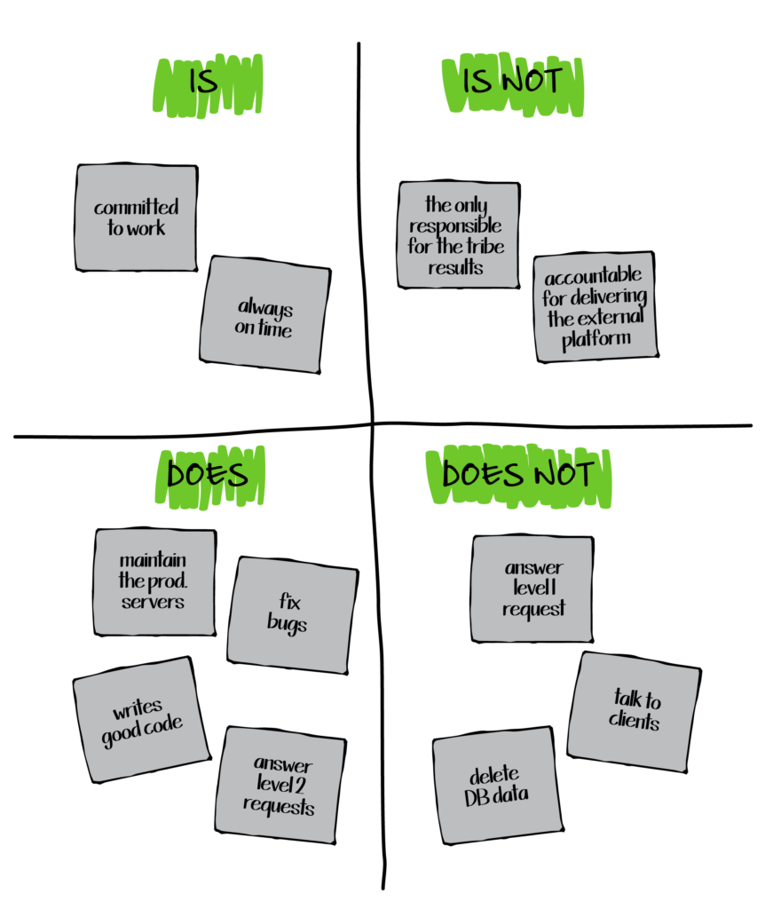

É, Não é, Faz, Não faz
A técnica É, Não é, Faz, Não faz é uma ferramenta estratégica de definição de escopo que auxilia equipes a esclarecer e alinhar uma visão compartilhada sobre um produto, projeto ou ideia. Ela é estruturada em quatro quadrantes que ajudam a distinguir claramente as características essenciais, os limites, as funcionalidades e as não-funcionalidades de uma solução. Sua simplicidade e eficácia tornam essa técnica amplamente utilizada, especialmente em sessões de brainstorming, planejamento de produto e design de soluções.
Quando usá-la?
Esta técnica é ideal para ser aplicada nas fases iniciais de desenvolvimento de projetos ou produtos, quando há a necessidade de definir e esclarecer o escopo da solução. Também pode ser usada em revisões posteriores, para ajustar o escopo em função de mudanças no mercado ou nas necessidades do projeto.
A técnica na prática
A técnica é dividida em quatro quadrantes que organizam as informações-chave sobre a ideia ou projeto:
| Quadrante | Descrição |
|---|---|
| É | Define o que a ideia, produto ou projeto é. Descreve características essenciais, a natureza do projeto e o valor principal que a solução entrega. |
| Não é | Define o que a ideia, produto ou projeto não é. Estabelece limites e fronteiras, evitando confusões ou expansões indevidas de escopo. |
| Faz | Descreve o que o produto ou projeto faz em termos de funcionalidades e ações que geram valor para os usuários. |
| Não faz | Especifica o que a solução não faz, ajudando a gerenciar expectativas e evitando o "escopo inchado". |
Passo a Passo
- Preparação: Divida um quadro em quatro quadrantes: É, Não é, Faz, Não faz.
- Definição do Produto: Insira o nome do produto ou serviço no topo do quadro.
- Participação: Os participantes preenchem os quadrantes com post-its ou notas digitais, destacando os atributos, funcionalidades e limitações do produto.
- Discussão e Agrupamento: Análises em grupo das ideias e agrupamento de conceitos semelhantes.
- Refinamento: Ajuste das descrições para garantir um entendimento claro e comum.
Imagem 1 - Estrutura de um É, Não é, Faz, Não faz.

Fonte: OPEN PRACTICE LIBRARY. Is – Is not – Does – Does not. 2024.
O que a técnica agrega na oficina
A técnica É, Não é, Faz, Não faz agrega valor ao trazer clareza e foco ao escopo do projeto, prevenindo a expansão descontrolada do escopo e promovendo o alinhamento entre diferentes stakeholders. Ela também facilita o gerenciamento de expectativas, garantindo que todos compreendam o que será e o que não será entregue, evitando mal-entendidos durante o desenvolvimento do projeto.
Bibliografia
- CAROLI, Paulo. E não é, faz, não faz. Disponível em: https://caroli.org/e-nao-e-faz-nao-faz. Acesso em: 1 out. 2024.
- FOWLER, Martin. The product Is – Is not – Does – Does not. Disponível em: https://martinfowler.com/articles/lean-inception/product-is-isnot.html. Acesso em: 1 out. 2024.
- OPEN PRACTICE LIBRARY. Is – Is not – Does – Does not. Disponível em: https://openpracticelibrary.com/practice/is-is-not-does-does-not/. Acesso em: 1 out. 2024.